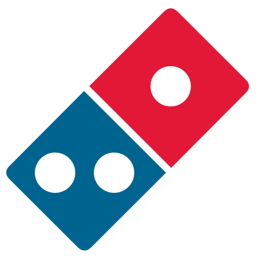
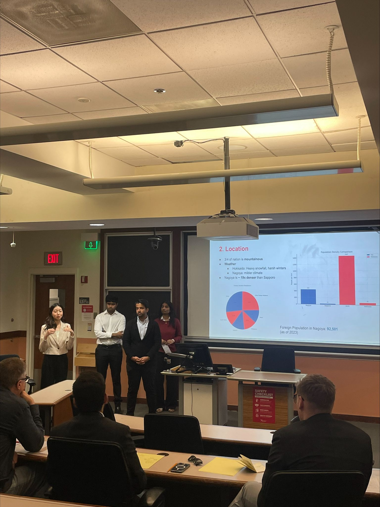

Domino's Pizza Japan was at a strategic decision point. The company had grown from 180 stores in 2007 to nearly 550 by 2018, with a target of 1,000 stores by 2028. Leadership had to choose between two very different growth paths: expand into Hokkaido, Japan's largest prefecture with 5.4 million people and zero existing Domino's presence, or fortress the dense urban markets already in play (Tokyo, Osaka, Nagoya) by opening more stores closer to existing customers. The case had real tension. Hokkaido offered untapped scale and first-mover advantage. Fortressing offered operational leverage but risked cannibalization. The competition called for a defensible recommendation grounded in the data.
The work moved through a structured strategy process.
We started with a market overview, mapping Japan's demographics, GDP, dining culture (pizza positioned as a celebratory rather than everyday purchase), and the competitive landscape (Pizza-La, Pizza Hut, and the much larger fast-food category dominated by McDonald's). That framing was essential because the conventional answer (expand to untapped markets) misreads how the pizza business actually works in Japan.
We then ran a SWOT analysis and a core competency assessment, focused on what Domino's Japan was genuinely best at: hyper-fast local delivery, enabled by Project 3TEN, the OneDigital platform, a centralized commissary, and a trained workforce. Every one of those strengths compounds with store density and weakens at distance.
Our strategic recommendation was to fortress Tokyo, Osaka, and Nagoya rather than expand into Hokkaido. The case rested on four pillars: operational efficiency (each minute saved on delivery is worth $0.50 in labor cost), strategic fit (Domino's competencies are density-dependent), localized marketing leverage (Japan requires 47 prefecture-specific TV campaigns, so concentration makes advertising spend viable), and a barbell pricing approach (premium for special occasions, value for everyday demand).
We addressed the counterargument directly. Hokkaido is attractive on paper, but its 65/km² population density is fundamentally incompatible with a delivery business optimized for dense urban operations. The startup costs and operational risk would be high, and the upside uncertain. The recommendation included a risk mitigation plan covering balanced expansion across the three cities, heatmap-driven store placement, talent development through staggered rollout, and contingency planning for competitor response.
The team behind the recommendation on competition day.
